7．定理的推广和领域的扩展
掌握了庞加莱和布劳威尔的思想的一些人，已经把拓扑扩展到很大的范围，使得它成为今天数学的最活跃领域之一。布劳威尔自己扩展了若尔当曲线定理(50)。这一定理（第42章第5节）可叙述如下：设S2为二维球（曲面），J为S2上的一条闭曲线（拓扑等价于一个S1），则S2－J的零维贝蒂数是2。既然这个贝蒂数是分支的个数，J就把S2分开成两个区域。布劳威尔的推广说，一个n－1维流形把n维欧几里得空间分开成两个区域。亚历山大(51)推广了庞加莱的对偶定理，因而间接地推广了若尔当曲线定理。亚历山大的定理说：n维球Sn上的一个复形K的r维贝蒂数等于余空间Sn－K的n－r－1维贝蒂数，r≠0和r≠n－1；而当r＝0时，K的零维贝蒂数等于1加上Sn－K的n－1维贝蒂数，当r＝n－1时，K的n－1维贝蒂数等于
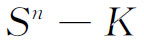
的零维贝蒂数减1(52)。这定理推广了若尔当曲线定理，因为如果取n－1维球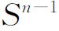
当作K，这定理就是说，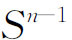
的n－1维贝蒂数（那是1）等于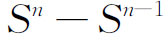
的零维贝蒂数减1，所以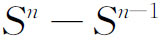
的零维贝蒂数是2，即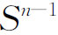
分开Sn成两个区域。贝蒂数的定义有各种的改变和推广。维布伦和亚历山大(53)引进了模2链和闭链；换句话说，用不定向的单形替代定向的单形，把整数系数取模2。链的边缘也这样算。亚历山大后来引进了(54)系数为整数模m的链和闭链。莱夫谢茨（Solomon Lefschetz，1884—1972）建议用有理数做系数(55)。庞特里亚金（Lev S．Pontrjagin，1908—1988）更进一步推广，用一个交换群的元素作链的系数(56)。这一概念包括了上述的各类系数，以及还用过的实数模1的另一类系数。所有这些推广，虽然确实导致了更广的定理，但并未使贝蒂数和挠系数在区别复形方面更加有效。
在基本的组合性质的确切叙述方面，从1925年到1930年一些人作了另一改变，可能是埃米·诺特建议的。这就是把链、闭链和边缘链的理论用群论的语言改写一遍。同维的链可以按照明显的方式相加，即把同一个单形的系数相加；并且，既然闭链也是链，它们也能相加，而且它们的和还是闭链。所以链和闭链都组成群。在给定的复形K上，每一个k维链有一个k－1维边缘链，并且两个链的和的边缘是这两个链各自的边缘链的和。因此，从链到边缘这种关系建立了从k维链的群
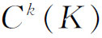
到k－1维链的群的一个子群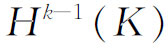
的一个同态。所有k维闭链（k＞0）是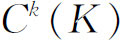
的一个子群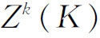
，并且在这同态下的像就是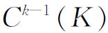
的恒同元素或0。既然每一个边缘链是一个闭链，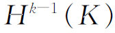
就是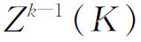
的一个子群。有了这些事实，就可以作下述定义：对于任何一个k≥0，k维闭链的群
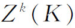
，模边缘链的群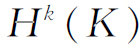
这个子群，所作成的商群，叫做K的第k个同调群（homology group），记作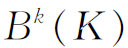
。这个商群的线性无关的母元的最大个数叫做这复形的第k个贝蒂数，记作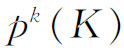
。第k个同调群也可以含有有限循环群，这些对应着挠闭链。事实上，这些有限群的阶就是挠系数。复形的同调群有了这群论的确切叙述之后，许多旧结果都能同样地重新叙述。20世纪初期的最有意义的推广，是引进一般空间的同调论，例如紧致度量空间的同调群，它不同于起初研究的复形的同调论。基本的设计来自亚历山大罗夫（Paul S．Alexandroff，1896—1982）(57)、维耶托里斯（Leopold Vietoris，1891—2002）(58)和切赫（Eduard Čech，1893—1960）(59)。因为它们牵涉到同调论的崭新的研究途径，这里不作介绍。但是，我们应该指出，这方面的工作标志着把点集拓扑和组合拓扑融合起来的一步。
参考书目
Bouligand，Georges：Les Définitions modernes de la dimension，Hermann，1935．
Dehn，M．，and P．Heegard：“Analysis Situs，”Encyk．der Math．Wiss．，B．G．Teubner，1907-1910，ⅢAB3，153-220．
Franklin，Philip：“The Four Color Problem，”Scripta Mathematica，6，1939，149-156，197-210．
Hadamard，J．：“L'Œuvre mathématique de Poincaré，”Acta Math．，38，1921，203-287．
Manheim，J．H．：The Genesis of Point Set Topology，Pergamon Press，1964．
Osgood，William F．：“Topics in the Theory of Functions of Several Complex Variables，”Madison Colloquium，American Mathematical Society，1914，pp．111-230．
Poincaré，Henri：Œuvres，Gauthier-Villars，1916-1956，Vol．6．
Smith，David E．：A Source Book in Mathematics，Dover（reprint），1959，Vol．2，404-410．
Tietze，H．，and L．Vietoris：“Beziehungen zwischen den verschiedenen Zweigen der Topologie，”Encyk．der Math．Wiss．，B．G．Teubner，1914-1931，Ⅲ AB13，141-237．
Zoretti，L．，and A．Rosenthal：“Die Punktmengen，”Encyk．der Math．Wiss．，B．G．Teubner，1923-1927，ⅡC9A，855-1030．
————————————————————
(1) 点集的基本性质，如紧致性和可分性，不同的作者用不同的定义，还未标准化。我们采用现在通常所理解的意义。
(2) Math．Ann．，94，1925，262-295．
(3) Math．Ann．，94，1925，309-315．
(4) Revuede Mètaphysique et de Morale，20，1912，483-504．
(5) Jour．für Math．，142，1913，146-152．
(6) Fundamenta Mathematicae，7，1925，30-137和8，1926，225-359．
(7) Monatshefte für Mathematik und Physik，33，1923，148-160和34，1926，137-161．
(8) Fundamenta Mathematicae，2，1921，256-285．
(9) Math．Ann．，104，1930，71-80．
(10) Monatshefte für Mathematik und Physik，33，1923，148-160和Math．Ann．；95，1926，277-306．
(11) Fundamenta Mathematicae，7，1925，30-137，特别是第93页。
(12) Leibniz，Math．Schriften，1 Abt．，Vol．2，1850，19-20＝Gerhardt，Der Briefwechsel von Leibniz mit Mathematikern，1，1899，568＝Huygens，Œuv．Comp．，8，No．2192。
(13) Novi Comm．Acad．Sci．Petrop．，4，1752-1753，109-140，pub．1758＝Opera，（1），26，71-93．
(14) Novi Comm．Acad．Sci．Petrop．，4，1752-1753，140-160，pub．1758＝Opera，（1），26，94-108．
(15) Jour．de l'Ecol．Poly．，9，1813，68-86和87-98＝Œuvres，（2），1，7-38．
(16) Comm．Acad．Sci．Petrop．，8，1736，128-140，pub．1741．这篇论文的英译本见纽曼（James R．Newman）：The World of Mathematics，Simon and Schuster，1956，Vol．1，573-580。［中文再译文见姜伯驹《一笔画和邮递路线问题》，数学小丛书（7），人民教育出版社，1964：33-39。——译者注］
(17) Werke，8，270-286．
(18) Abh．der Ges．der Wiss．zu Gött．，10，1861，97-180，并在1862年以书的形式出版。
(19) Königlich Sächsischen Ges．der Wiss．zu Leipzig，15，1863，18-57＝Werke，2，433-471．
(20) Werke，2，518-559．
(21) Königlich Sächsischen Ges．der Wiss．zu Leipzig，17，1865，31-68＝Werke，2，473-512；也见第519页。
(22) Proceedings of the Royal Geographical Society，1，1879，259-261＝Coll．Math．Papers，11，7-8．
(23) 请参看阿佩尔（K．Appel）和哈肯（W．Haken）的“Every planar map is four colorable”，Bull．Amer．Math．Soc．，82（1976），711-712。——译者注
(24) Jour．für Math．，54，1857，105-110＝Werke，91-96；也看Werke，479-482。
(25) Proc．Lon．Math．Soc．，8，1877，292-304＝Math．Papers，241-254．
(26) Über Riemanns Theoric der algebraischen Funktionen und ihrer Integrale，托伊布纳（B．G．Teubner），1882；Dover重印英译本，1963，也见克莱因的Ges．Math．Abh．，3，499-573。
(27) Math．Ann．，7，1874，549-557＝Ges．Math．Abh．，2，63-77．
(28) Jour．de Math．，（2），11，1866，105-109＝Œuvres，4，85-89．
(29) Annali di Mat．，（2），4，1870-1871，140-158．
(30) Jour．de l'Ecole Poly．，（2），1，1895，1-121＝Œuvres，6，193-288．
(31) Rendiconti del Circolo Matematico di Palermo，13，1899，285-343＝Œuvres，6，290-337．
(32) Proc．Lon．Math．Soc．，32，1900，277-308＝Œuvres，6，338-370．
(33) 这些
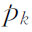
比庞加莱的小1。这里我们使用现在习惯的说法。(34) Rendiconti del Circolo Matematico di Palermo，18，1904，45-110＝Œuvres，6，435-498．
(35) Amer．Math．Soc．Trans．，20，1919，339-342．
(36) 对于n≥5，这推广的猜测曾经被斯梅尔（Stephen Smale）（Amer．Math．Soc．Bull．，66，1960，373-375），斯托林斯（John R．Stallings）（ibid．，485-488）和塞曼（E．C．Zeeman）（ibid．，67，1961，270）证明。［后来n＝4，3时也分别为弗里德曼（M．Freedman）与佩雷尔曼（G．Perelman）证明。——译者注］
(37) 已经证明：对于低于三维的有限的单纯复形（这比流形广），主猜测成立，但对于不低于五维的这种流形，主猜测错误。对于不高于三维的流形，主猜测正确，但对于不低于四维的流形，主猜测对否是一个未解决的问题。见米尔诺，Annals of Math．，（2），74，1961，575-590。
(38) Amer．Math．Soc．Trans．，16，1915，148-154．
(39) Math．Ann．，70，1910/1911，161-165，和71，1911/1912，305-313．
(40) Math．Ann．，71，1911/1912，97-115．
(41) Proceedings Koninklijke Akademie von Wettenschappen te Amsterdam，12，1910，785-794．
(42) Math．Ann．，71，1911/1912，97-115．
(43) Math．Ann．，71，1911/1912，97-115．
(44) Math．Ann．，71，1911/1912，97-115．
(45) Rendiconti del Circolo Matematico di Palermo，33，1912，375-407＝Œuvres，6，499-538．
(46) Amer．Math．Soc．Trans．，14，1913，14-22＝Coll．Math．Papers，1，673-681．
(47) Amer．Math．Soc．Trans．，23，1922，96-115＝Birkhoff，Coll．Math．Papers，3，255-274．
(48) Studia Mathematica，2，1930，170-179．
(49) Ann．de l'Ecole Norm．Sup．，51，1934，45-78．
(50) Math．Ann．，71，1911/1912，314-319．
(51) Amer．Math．Soc．Trans．，23，1922，333-349．
(52) 亚历山大是在链的系数是整数模2（见下一段）这个条件下叙述他的定理的。我们的叙述中用通常的整数系数。
(53) Annals of Math．，（2），14，1913，163-178．
(54) Amer．Math．Soc．Trans．，28，1926，301-329．
(55) Annals of Math．，（2），29，1928，232-254．
(56) Annals of Math．，（2），35，1934，904-914．
(57) Annals of Math．，（2），30，1928/1929，101-187．
(58) Math．Ann．，97，1927，454-472．
(59) Fundamenta Mathematicae，19，1932，149-183．